Base canvas 116×116 px, shown at 4× nearest-neighbour = 464 px, i.e. the full 466×466 AMOLED. Sprites are generated by assets/gen/pixelgen.py.
0 · Decided (2026-11-02): round glasses + a small rolling suitcase; no scarf, no satchel
Final look. Gugu wears round glasses always. The suitcase is a separate sprite: it stands beside Gugu when leaving or travelling, parks in the corner by the chalkboard when home, and the empty corner means "away". The wall hook is gone. Red keeps the signature colour; teal shown for comparison.
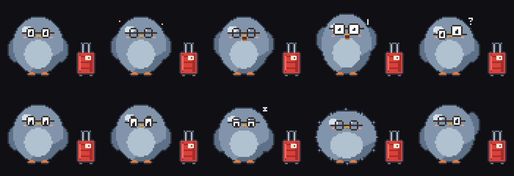
ten expressions · red suitcase
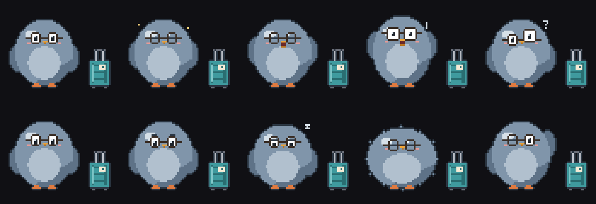
ten expressions · teal suitcase
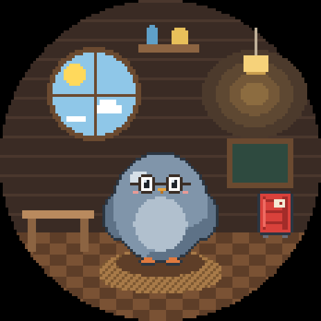
home · day · suitcase parked
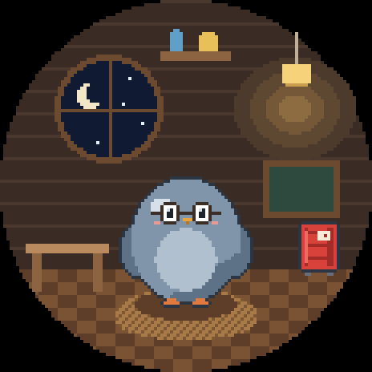
home · night
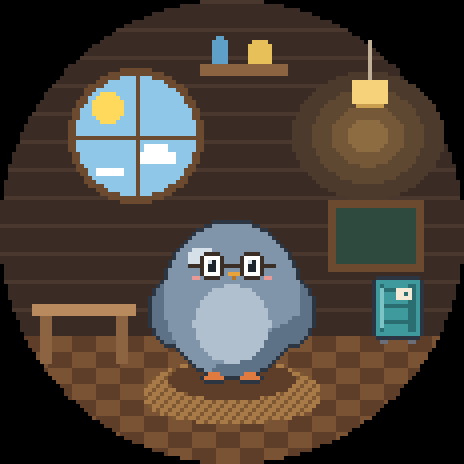
home · teal variant
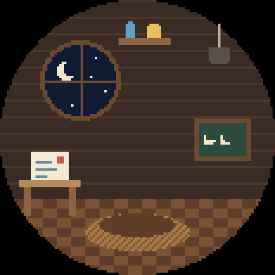
away · night · corner empty
E · No scarf: glasses and/or knitted vest (2026-11-02)
Rows: glasses only · red vest · red vest + glasses · mustard vest + glasses · green vest + glasses. Columns: neutral · happy · surprised · sleepy · wave · shy · puff. Home scenes below show the satchel on the hook as the home/away marker instead of the scarf.
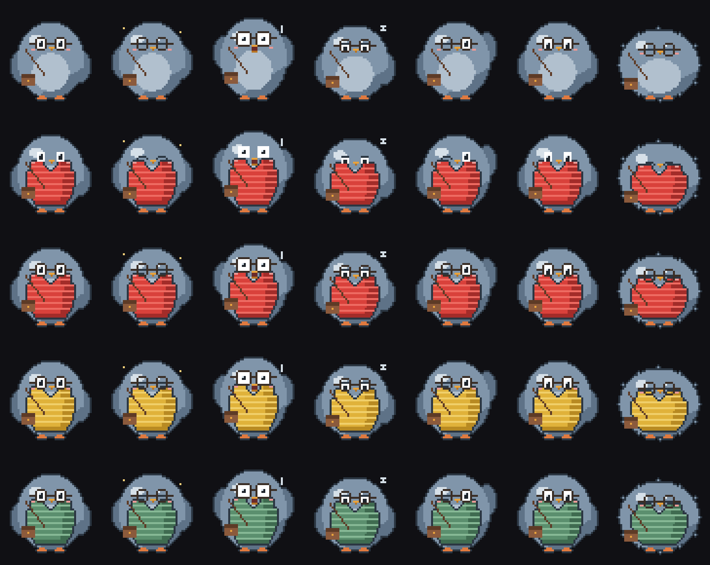
five options × seven expressions
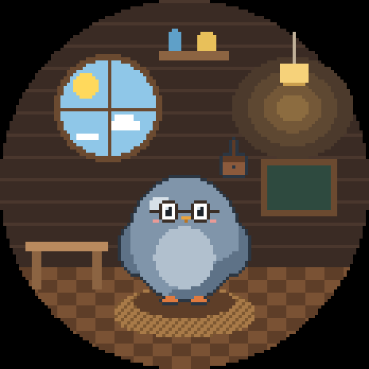
home · glasses · satchel on the hook
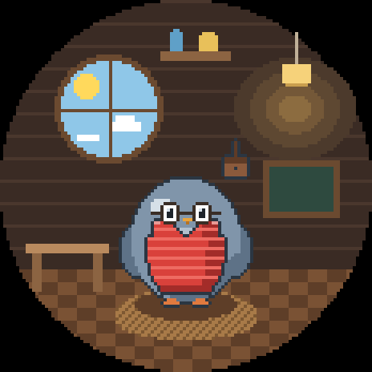
home · vest + glasses · satchel on the hook
D · Accessory options (2026-11-02, after review: "the scarf is hard to read")
A · Pixel style, expression set (13-tag vocabulary draft) — history, scarf v1
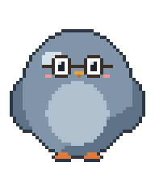
neutral
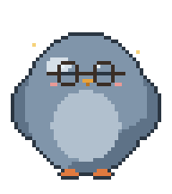
happy
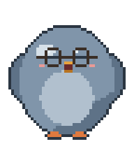
laughing
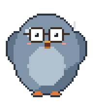
surprised
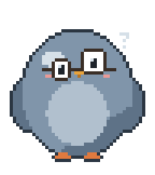
curiousshy
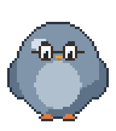
sad
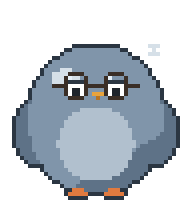
sleepy
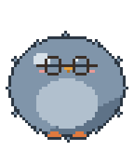
puff (cold / sleepy ball)
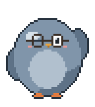
wave
B · Pixel style, the home at full screen
home · day · lamp on · scarf on hookhome · night
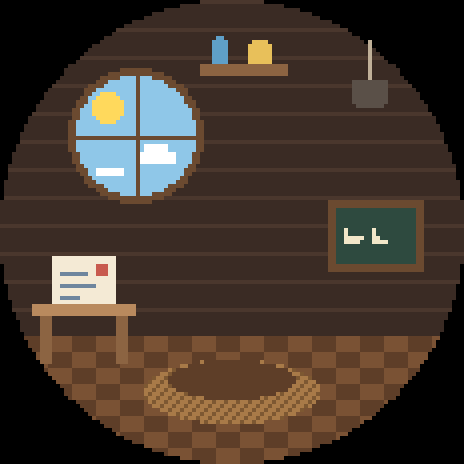
away · day · postcard on table · 2 moonsaway · night · lamp off
C · Flat-vector alternative (for comparison only)
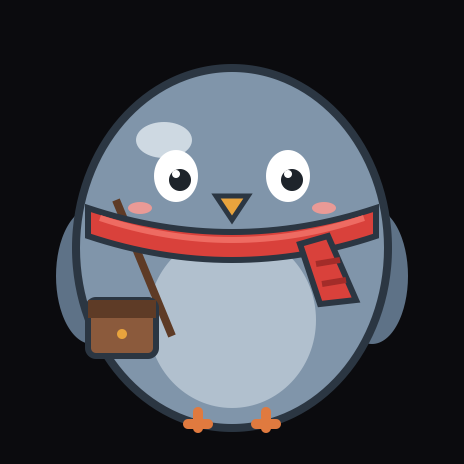
same character, flat vector (SVG)
Numbers
One 48×54 sprite = 2.6 KB as RGB565 + 8-bit alpha (RGB565A8). 10 expressions ≈ 26 KB. A full 116×116 scene bitmap ≈ 27 KB. Whole UI art budget well under 500 KB.
The vector route at 466×466 needs either ThorVG on the ESP32-S3 (CPU-bound, no HW accel) or pre-rasterised ARGB8888 frames (868 KB per full frame).